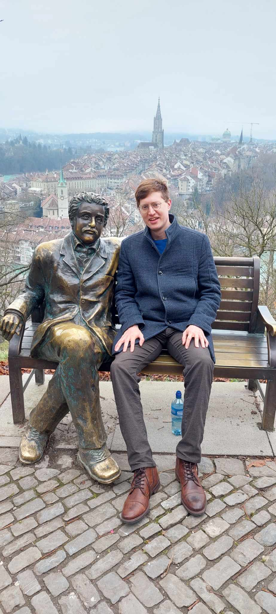
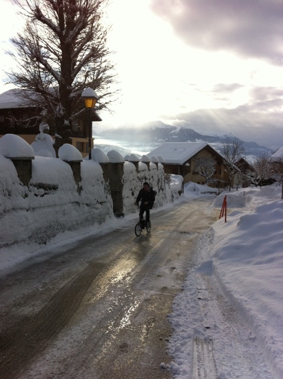

University of Geneva · Collaborateur scientifique
Niels Linnemann
Philosopher of Physics
Bienvenue! My name is Niels Linnemann; I am a Philosopher of Physics at the University of Geneva where I work as a collaborateur scientifique in the group of Prof. Dr. Chris Wüthrich. My main interests are in reasoning within physics (including theory construction and discovery), the philosophy of spacetime, and accounts of the laws of nature.
I studied Physics, Mathematics and Philosophy at Münster (BSc Physics, BSc Mathematics), Lund, Oxford (MSt in Philosophy of Physics) and Cambridge (MASt in Advanced Mathematics/Part III).
My PhD thesis focused on methodological strategies for finding a theory of quantum gravity — using quantum gravity as a case study to illuminate questions of (1) how theory construction is motivated non-empirically, and (2) what status various strategies of non-empirical theory construction have (analogical reasoning, robustness arguments, quantisation). My research took place within the Swiss NSF project New Avenues Beyond Spacetime.
From January 2020 to January 2023 I worked and taught as Wissenschaftlicher Mitarbeiter in the group of Prof. Dr. Dr. Norman Sieroka. From September 2020 to February 2021 I was also a postdoc in the New Directions in Philosophy of Cosmology Project at the Rotman Institute of Philosophy (London, Ontario). I have held long-term visiting fellowships at the Inductive Metaphysics Project (Bonn) and at the Centre for Philosophy and the Sciences (Oslo), and was a Young Academy Fellow at the Academy of Sciences and Humanities in Hamburg (2021–2023).
I also enjoy community building: together with Kian Salimkhani I co-founded philosophiederphysik.de in 2018, which organises weekend seminars, quarterly lectures, and provides career resources for the German-speaking philosophy of physics community. More recently, within the EmerGe collaboration, we advance our understanding of emergent geometries and spacetimes through retreats, workshops, and reading sessions.
Contact: niels.linnemann@unige.ch

(photo: Isadora 'Nini' Linnemann)
